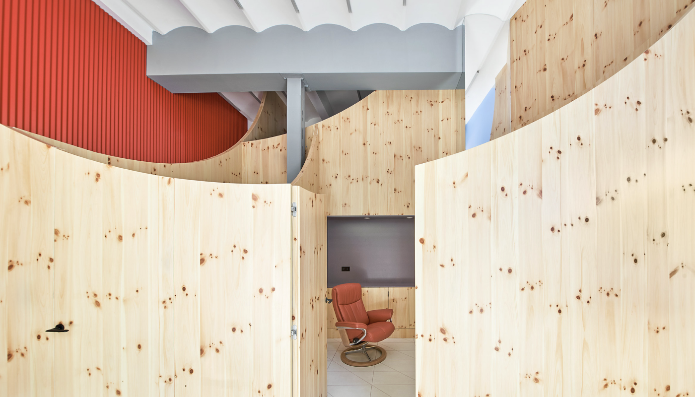

Streamline teeth alignment process with Impress App
Platform
iOS, Android
Role
Product Designer, Manager, 3D modeler
Date
2022
Overview
Impress, Europe’s leading chain of orthodontic clinics has made its mark in 9 countries, spanning over 130 cities. The Impress clear aligners, recommended by seasoned orthodontists with over 15 years of experience, are a testament to the brand's promise: revolutionizing smiles in a discreet, comfortable, and efficient manner. The Impress medical team, known for its expertise, collaborates seamlessly to craft personalized treatment plans that are projected to yield results in under six months. Their dedication has led to an impressive achievement: more than 50,000 patients wearing radiant and perfectly aligned smiles.

Context
Impress patients, especially adults, prefer clear aligners because they are virtually invisible, allowing them to undergo orthodontic treatment without the aesthetic concerns associated with traditional metal braces.
Impress company uses advanced imaging technology, such as 3D scanners, to create a highly accurate digital model of the patient's teeth. These models are then used to design and manufacture the series of custom aligners. The aligners are typically made from a clear, medical-grade plastic that is both strong and transparent.
Here's a breakdown of how such treatments typically work:
The journey begins digitally, where future patients encounter Impress either via organic searches, informative blog posts, or captivating paid ads. Drawn to the clinics, their initial visit facilitates a mutual commitment: patients entrust their smiles and, with a prepayment, anchor their treatment journey.
Craftsmanship ensues as bespoke aligners are meticulously crafted for each patient. With the treatment's onset, some collect their kits personally from clinics, while others opt for doorstep delivery. Slipping on the first aligner marks the commencement of their transformative phase.
Problem
While the Impress aligners are adept at achieving transformative dental results, the process has inherent challenges. Patients shift between multiple sets of aligners throughout their treatment, transitioning every few weeks that mandate validation from a dental professional, leading to frequent clinic visits. These repetitive appointments deplete the clinic's time and resources by overloading clinic capacity. Considering the customer acquisition costs and costs of clinic maintenance, the patient visit can cost the company 50 to 600 euros, depending on the daytime and clinic location.
Objective
Minimize operational expenses and Improve clinic scheduling and time management, leading the patient through the process and boosting the overall experience associated with the company.
Research
Determined to understand the depth of the challenges our patients faced, I spearheaded a comprehensive research process:
I conceptualised a structured interview script and adapted it for our call center so they could asynchronously run the interview with existing patients.
Considering local clinic areas, I ensured the script's translation into multiple languages, including Spanish.
Collaborating with the customer care team, I gathered profound insights from patient interviews.
The collected data was transcribed, translated back to English, and systematically analyzed in the future in order to track and estimate the improvements.
According to the provided information, I visualized the data on the user journey map to highlight the most valuable pain points.
Frequency of Visits: A significant number of patients found the bi-weekly dental checkups disruptive. The impact was twofold: interrupting personal schedules and escalating treatment costs.
Wait Times: Extended waiting periods, even with prior appointments, were a common grievance.
Lack of Progress Tracking: A predominant wish was to have a tool to monitor treatment progress.
Communication Gaps: Many patients felt left in the dark regarding when to switch aligners.
Booking System Inefficiencies: A more streamlined booking process was a recurrent request.
Benchmarking
Before devising the mobile application solution, I took the initiative to analyze existing solutions in the orthodontic sphere and other relevant industries. This involved brainstorming, market research, and competitive benchmarking.
Direct Competitors: I observed that orthodontic practices worldwide have begun integrating virtual monitoring tools. While some opt for straightforward progress tracking through shared photos, others have implemented specialized software designed to chronologically map dental transformations.
Indirect Competitors: With telehealth emerging as a robust trend, platforms such as Teladoc and Doctor On Demand have ushered in a new era of virtual medical consultations. I gleaned invaluable insights by delving into their user interface designs, onboarding procedures, and connectivity solutions. Moreover, messengers appeared to be the most relevant competitors considering treatment procedures in small or private clinics.
Non-healthcare Sectors: Venturing beyond healthcare, I analyzed how entities in unrelated sectors managed regular check-ins and client consultations. Fitness applications like MyFitnessPal and 7 Minute Workout, emphasizing progress visualization, reminders, and expert connections, provided a blueprint adaptable to the orthodontic context.
After assimilating these insights, I identified gaps and areas of potential enhancement in the existing solutions. It became evident that a consolidated platform, imbibing the best of observed features and customizing them to cater to orthodontic patients, would be the optimal way forward.
Ideation
With the research insights in hand, I facilitated brainstorming sessions with our product design and customer service teams. These sessions were pivotal in generating creative ideas on how technology can resolve the specific issues our patients face.
From the brainstorming outcomes, I synthesized the ideas into coherent potential solutions. Each solution targeted a particular issue:
A Remote Consultation System: To address the need for frequent physical visits, I proposed a remote consultation system. This system would use video calls and messaging to allow for real-time interactions between patients and orthodontists, thereby reducing the need for in-clinic appointments.
Digital Treatment Monitoring Tools: Recognizing the desire of patients to track their progress, I recommended the development of digital tools within our app. These tools would enable patients to monitor their treatment milestones through visual representations and notifications, empowering them with immediate insights into their progress.
Direct Communication Channel: To eliminate communication barriers, I suggested implementing a direct communication channel within the app. This would facilitate immediate and clear communication between patients and their care teams, streamlining the information flow and ensuring that queries and concerns are swiftly addressed.
Appointment System Overhaul: Lastly, the feedback pointed towards the need for a more user-friendly appointment system. I put forward the idea of revamping our existing system to include an intuitive, easy-to-navigate interface that would allow for seamless appointment scheduling and management.
User testing
During the development of the first version of the mobile application, I spearheaded a comprehensive user testing process that played a pivotal role in shaping our final product. This iterative approach involved releasing a series of prototypes, each designed to test specific aspects of the user experience.
Our diverse participant pool, comprising existing Impress patients across various demographics, provided invaluable feedback. From the initial prototype, we learned the importance of intuitive navigation, leading to a more streamlined user interface in subsequent iterations. The second round of testing highlighted a desire for more personalized progress tracking, prompting us to enhance the app’s visualization tools. We also encountered valuable suggestions regarding the appointment scheduling feature, emphasizing the need for greater flexibility and ease of use. Through this iterative testing, we not only fine-tuned functionalities but also deepened our understanding of user expectations and pain points. These learnings were instrumental in refining the app into a user-centric platform that truly resonates with our patients' needs, ultimately enhancing the overall treatment experience with the application.
Solution
To address the challenges discerned during the research phase, I proposed the development of an innovative mobile application, proving the model on the existing and potential customers and justifying the economic value. This platform served as the crux for patient and orthodontic team interactions and was infused with features to streamline and amplify the user experience.
Kit delivery
The transition from the initial offline clinic experience to our online platform is a crucial juncture where the patient's journey takes a leap toward digital engagement. My strategy here was to design an informative and reassuring kit delivery process that begins with educating the patient about the manufacturing stage. A series of personalized emails and app notifications provide real-time updates on the production of their custom aligners, building anticipation and trust in the product's quality.
Upon dispatch, patients receive a detailed timeline, including tracking information for their kit delivery. This communication is critical as it prepares them for the start of their treatment, ensuring they're ready to begin as soon as their kit arrives. The delivery is not just a parcel but a pivotal touchpoint that marks the commitment to their new smile journey.
Onboarding
The onboarding phase is designed to be an immersive and educational experience. When patients receive their treatment kit, they find a well-organized package along with an intuitive mobile app to guide them through the initial setup. The app includes a series of interactive tutorials that visually and verbally guide patients on how to use their aligners correctly. This process is vital to ensure patient confidence and proper use of the aligners from day one.
To augment this experience, I built 3D models of the treatment kit and incorporated a series of made-in-house short looped videos that show patients detailed instructions reflecting each step needed. The onboarding is not just instructional but also aims to empower patients with the knowledge and tools they need to take control of their treatment.
Treatment and communication
For the ongoing treatment process, the mobile application is central to maintaining treatment efficacy and patient engagement. A critical feature is the wear-time tracking suggestion, which gently nudges patients to maintain the recommended 22 hours of aligner use per day. The app includes a timer and a daily log where patients can track their wear time, receive reminders, and celebrate milestones to stay motivated.
Progress tracking is facilitated through a feature where patients capture and upload photos of their teeth after completing each step of their treatment. These images are sent to their orthodontist through a HIPAA-compliant platform within the app, enabling the doctor to review and approve the transition to the next aligner set remotely, minimizing clinic visits.
Additionally, a built-in messenger function allows real-time communication with the patient care team. This ensures that any concerns or questions can be addressed promptly, providing a continuous support system. It also offers the flexibility for the care team to check in with patients, ensuring they feel guided and cared for throughout their treatment journey.
By enhancing each of these phases with thoughtful, user-centric features, I aimed to ensure a smooth, informed, and engaging treatment process for Smile2Impress patients, leading to a higher level of satisfaction and better treatment outcomes.
Conclusion
The journey from concept to execution was rapid yet remarkably efficient, with the first version of the app being developed and deployed within a mere three months, followed by bi-weekly updates to ensure continuous improvement and responsiveness to user feedback.
The adoption rate of the application by new customers was impressively swift, capturing 50% of the clientele within 3-4 months of launch, and achieving full adoption in 6 months. This seamless transition is indicative of the application’s intuitive design and the immediate value it provided to the customers.
From a cost perspective, the application proved to be a financially astute investment. The savings generated in the early phase, amounting to 200,000 euros, factoring in the development costs, underscore the application’s role in streamlining operations and reducing overheads. This efficiency gain not only optimised the company's resource allocation but also demonstrated the potential for scalable, tech-driven solutions in orthodontic care.
The application's performance on AppStore and Google Play with ratings hovering around 4.7 is a clear indicator of user satisfaction and the product’s high quality. These ratings, coupled with user reviews, serve as a beacon for potential customers, instilling trust and reinforcing the brand's reputation for excellence.
Moreover, the financial markets took note of the company's innovative strides, as evidenced by the impressive $125 million raised in the Series B funding round. Such a significant infusion of capital further validated the business model and the strategic direction of Smile 2 Impress. Being spotlighted on TechCrunch as one of the fastest-growing companies in the EU further amplified the company’s market presence and signaled its competitive edge in the health tech arena.
In conclusion, the deployment of the Smile2Impress application catalysed a transformative shift within the organisation, not only in terms of operational efficiency and customer satisfaction but also in establishing the company as a frontrunner in the intersection of healthcare and technology. It underlines a narrative of growth and innovation, positioning Smile2Impress as a beacon of digital advancement in the orthodontic sector.